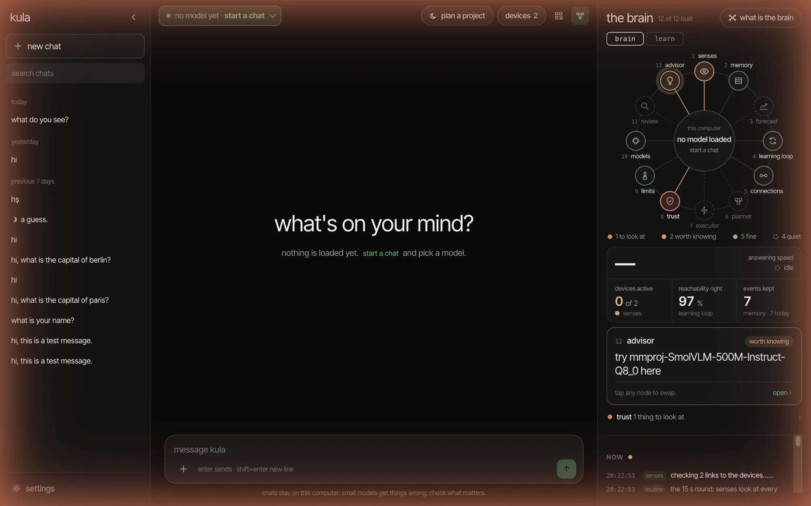

open models · on your own devices
Your devices,
one local AI.
kula joins your phones, tablets and computers into one AI cluster that runs open models. They talk to each other directly — nothing goes to a cloud.
-
First open: right-click the app → Open. On macOS 15: System Settings → Privacy & Security → Open Anyway. Intel Macs: later.
-
Windows coming later
Not built yet: the desktop app has not run on Windows.
-
iOS coming later
The iPhone app does not run models yet.
-
Open the apk and allow installing from this source when Android asks.

the brain
God's eye over your devices, on the right of the picture: twelve branches (senses, memory, forecast, planner, trust, limits…) look at the cluster every few seconds and say what they see. It watches and never acts. Its learn tab collects papers, videos and courses on local AI.